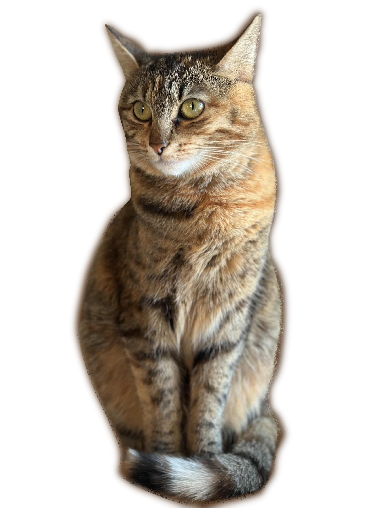

The Cats
Miso
Miso is a two-year-old, orange-coated male domestic short hair. Compared to his sister, Miso is more on the shy side. Don't let this fool you, however, he's still very sweet and is always available to cuddle with.
Click on Miso to see more images of him!

Milo
Milo is a two-year-old, torbie, female domestic short hair. Compared to her brother, she's very sassy and usually doesn't hesitate to show you how she's truly feeling. Deep down, though, she's just as sweet as Miso.
Click on Milo to see more images of her!
